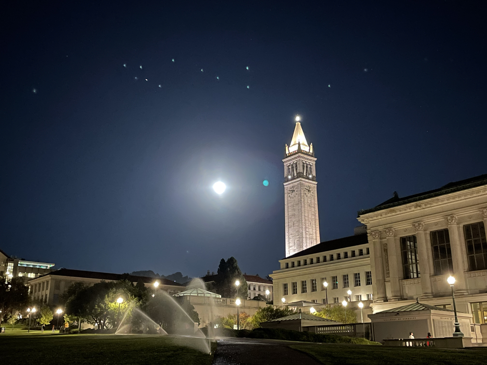
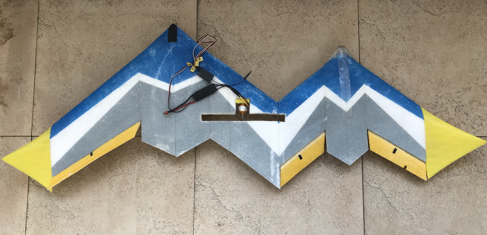

About Me

Education:
University of California Berkeley
Expected BA in Astrophysics and Computer Science
Research Interests:
I am most passionate about applying programming and data analysis skills to study astrophysics topics. I have a strong interests in exoplanets and habitable zones, radio astronomy, black holes, and the early universe. I am still exploring different fields in astrophysics.
Hobbies:
I enjoy bird watching! I love reading science fictions and all sorts of
rich-plot books! I'm also a big fan of The Big Bang Theory.
Research

Twin-Body Assymetric Flying-Wing Aircraft Project
The idea of combining twin-body aircraft, flying-wing structure, and asymmetric arrangement to carry out the air-monitoring task is proposed by me. I called it “Twin-body Asymmetric Flying-Wing Aircraft (TAFA)” and hoped to improve flight efficiency, endurance, and loading capacity of the UAV and solve the equipment’s’ interference problem. TAFA and the other three control group planes (normal aircraft, flying-wing aircraft, and twin-body symmetric Airplane) were designed, modeled. They were simulated by the vortex lattice method and Computational Fluid Dynamics (CFD) to get main aerodynamic data. Finally, I fabricated the TAFA plane model (as shown in the figure) and did a flight test to prove its feasibility. I eventually wrote a paper which is included by EI and ISTP. I also attended the 4th International Conference on Modeling, Simulation, and Applied Mathematics.
For more information about TAFA project, check out the PPT link: TAFA Project PPT!

Exoplanet
An exoplanet is a planet outside of the solar system. Currently there are about 4800 exoplanets discovered through various methods, such as radial velocity, transit, astrometry, imaging, and microlensing. In this project, we are trying to discover and confirm an unknown exoplanet by looking and filtering data from TESS and taking pictures of potential candidates. A potential candidate of exoplanet needs three transit to confirm. We tried to find potential candidates with transit period between 14-30 days since TESS only observe the same patch of sky for 27 days. Then, we are going to use telescope to take pictures of the potential candidates and observe three transits to confirm it.
Contact
Email: sunnyguo@berkeley.edu
Address: 1780 Le Roy Ave, Berkeley, CA 94720